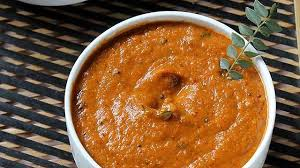

Tomato Chutney

Popular South Indian dish
Tomato Chutney is a tangy and tasty South Indian chutney made from tomatoes, herbs and spices.
Ingredients
- Tomatoes
- Ginger
- Dry Red Chillies
- Urad Dal
- Black Pepper
- Clove
- Oil
- Salt
Steps
- Heat oil and add urad dal. On a low flame, saute the urad dal till they start turning maroonish.
- Once the lentils get a maroonish brown color, add broken dry red chilies, cloves, black pepper and ginger. Stir for till the red chilies change their color.
- Then add chopped tomatoes and asafoetida. Add salt.
- Stir and saute till the tomatoes soften. About 6 to 7 minutes on a low flame.
- Once the tomato mixture cools, add them to a chutney grinder or small blender.
- Add 2 tbsp water and grind to a smooth paste.